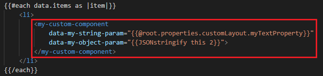

Create a custom web component¶
What is a web component?¶
A web component is a custom HTML element that can be used in your templates to implement complex behaviors. In the solution we used them here as "wrappers" for React components to be able to use them with Handlebars. More information about web components in general can be found here.

By default, several components are available (see the complete list). If these does not fit your requirement, you can still create your own.
Web component creation process¶
Web component creation process comes in two distinct steps:
- Create the component class and its React sub components.
- Register the component information for discovery.
Create the component logic and sub components¶
A web component is typically composed of these parts:
- A web component class derived from the native
HTMLElementclass. - A main React component to be rendered inside the web component.
To create new component:
- In your extensibility library project, create a new
MyComponent.tsJSX file. - Create a new class extending the abstract class
BaseWebComponent. This class must have at least theconnectedCallback()method from base interfaceHTMLElement.
export class MyCustomComponentWebComponent extends BaseWebComponent {
public constructor() {
super();
}
public async connectedCallback() {
...
}
}
- Create a new regular React component (in the same file or a separate file and as class or hook):
export interface IObjectParam {
myProperty: string;
}
export interface ICustomComponentProps {
/**
* A sample string param
*/
myStringParam?: string;
/***
* A sample object param
*/
myObjectParam?: IObjectParam;
}
export interface ICustomComponentState {
}
export class CustomComponent extends React.Component<ICustomComponentProps, ICustomComponentState> {
public render() {
// Parse custom object
const myObject: IObjectParam = this.props.myObjectParam;
return <div>{this.props.myStringParam} {myObject.myProperty}</div>;
}
}
In this solution, web components are considered stateless, meaning they will be entirely recreated when an attribute is changed (coming from the property pane). It means you can still use an internal state in your React components but not rely on the parent context (props) since it will be recreated every time by the Handlebars template if a property pane value is updated. The componentDidMount() method will be called every time in this case (not componentDidUpdate()).
- In your web component class, render your React component:
public async connectedCallback() {
let props = this.resolveAttributes();
const customComponent = <CustomComponent {...props}/>;
ReactDOM.render(customComponent, this);
}
The resolveAttributes() method will look at all data-* HTML attributes in your web component custom element node and return a corresponding key/value pair object with values in their guessed type that you can pass directly to your React component as props. By convention, web component attributes have to be passed using camel case to be tranformed into React component props. For instance: a data-my-string-param HTML attribute becomes myStringParam prop.
Supported guessed types for attributes are boolean, string, date and object. All non supported types will be passed a string. HTML attributes must use the data- prefix to be retrieved correctly.
To pass JSON objects, you can use the JSONstringify Handlebars helper. If valid JSON, they will be returned as objects by the resolveAttributes() method.
Example
<my-custom-component
data-my-string-param="Default value"
data-my-object-param="{{JSONstringify this 2}}"
data-my-date-param="01/01/2020"
data-my-boolean-param="true"
>
</my-custom-component>
Register component information¶
The next step is to fill information about your new component. In the library main entry point (i.e. the class implementing the IExtensibilityLibrary in interface) return a new IComponentDefinition object in the getCustomWebComponents() method using these properties:
| Property | Description |
|---|---|
componentName |
The name for your component. This name will be used as the custom HTML element name (ex: <my-custom-component>). |
componentClass |
The web component class for that component. |
public getCustomWebComponents(): IComponentDefinition<any>[] {
return [
{
componentName: 'my-custom-component',
componentClass: MyCustomComponentWebComponent
}
];
}
Consume services from BaseWebComponent¶
const msGraphClientFactory = this._serviceScope.consume(MSGraphClientFactory.serviceKey);
const msGraphClient = await msGraphClientFactory.getClient();
Theming in custom web components¶
To apply the current SharePoint section theme to your component, pass the theme variant via the data-theme-variant attribute in your Handlebars template:
<my-custom-component
data-my-string-param="Default value"
data-theme-variant="{{JSONstringify @root.theme}}"
>
</my-custom-component>
The resolveAttributes() method will parse this into a themeVariant prop (an IReadonlyTheme object) that you can pass to Fluent UI components:
import { IReadonlyTheme } from '@microsoft/sp-component-base';
public async connectedCallback() {
const props = this.resolveAttributes();
const theme: IReadonlyTheme = props.themeVariant;
// Use theme.semanticColors, theme.palette, etc.
}
If your component cannot receive the attribute from the template (e.g., it's not rendered by Handlebars), you can override the getThemeVariant() hook to provide a fallback:
import { ThemeProvider } from '@microsoft/sp-component-base';
export class MyComponent extends BaseWebComponent {
protected getThemeVariant(): any {
if (this._serviceScope) {
const themeProvider = this._serviceScope.consume(ThemeProvider.serviceKey);
return themeProvider.tryGetTheme();
}
}
public async connectedCallback() {
const props = this.resolveAttributes();
// props.themeVariant is now available via the hook fallback
}
}